Bridges replace one or more missing teeth. The neighbouring teeth are prepared to support the bridge. Clinical and laboratory stages include a temporary plastic bridge, impressions, a metal framework try-in and shade selection before final cementation.
Leaving even one missing tooth unreplaced changes both dental arches. Neighbouring teeth tilt into the space and expose part of their roots; the opposing tooth over-erupts towards the gap. This gradual process, described on the original site as the Godon–Popov effect, reduces space for a future bridge or implant and may require a more complex treatment plan. Loss of function also distributes chewing forces unevenly, overloads nearby teeth and can affect the temporomandibular joint. Speech may change, with hissing or saliva escaping. The visible gap also affects appearance.
A temporary bridge protects prepared vital teeth from temperature sensitivity and exposed tissues from oral bacteria. It restores speech, chewing and appearance, supports soft-tissue healing and allows the shape and bite to be assessed before the permanent restoration.
Crowns may be needed after root canal treatment, extensive decay or tooth fracture. Options include metal-ceramic, all-ceramic and zirconia crowns. A metal-ceramic crown has a closely fitting metal coping covered with porcelain. Metal-free ceramic and zirconia crowns allow light to pass through, reproducing translucency, fluorescence and opalescence more closely. They can be fitted to vital and root-treated teeth, including heavily loaded back teeth. They combine comparable strength with low weight, good gum compatibility and natural comfort. Crowns restore neighbouring and opposing tooth contacts, appearance, function and biological compatibility.
After root canal treatment, teeth lose some elasticity and hydration and are more vulnerable to deep fractures. Such fractures can make extraction necessary. Protective crown coverage helps reduce this risk.
An endocrown can restore selected root-treated teeth after careful canal treatment. The tooth is prepared, an impression is taken and a laboratory makes the missing portion in ceramic. Its internal part fills the pulp chamber to provide retention, avoiding a post-and-composite build-up and circumferential preparation for a conventional crown. The aim is to restore appearance, function and biological compatibility.
The clinical photographs include zirconia and metal-ceramic bridges, a fractured root-treated tooth, ceramic crowns and three endocrown cases. In case 3, tooth 1 has a treated canal and receives an endocrown; teeth 2 and 3 have secondary decay under amalgam fillings and are restored with aesthetic fillings. The sequence includes the endocrown on its model and the final restorations.
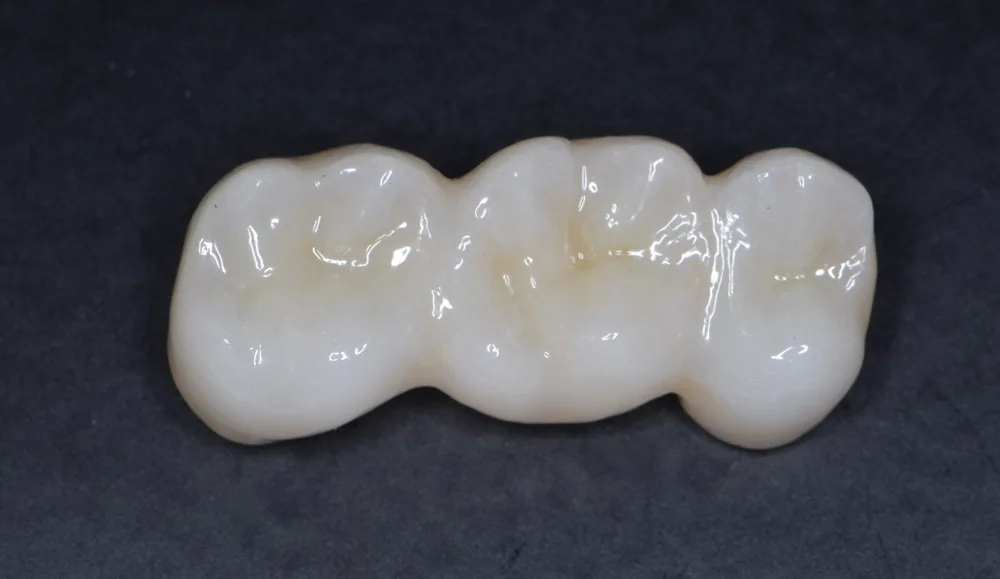
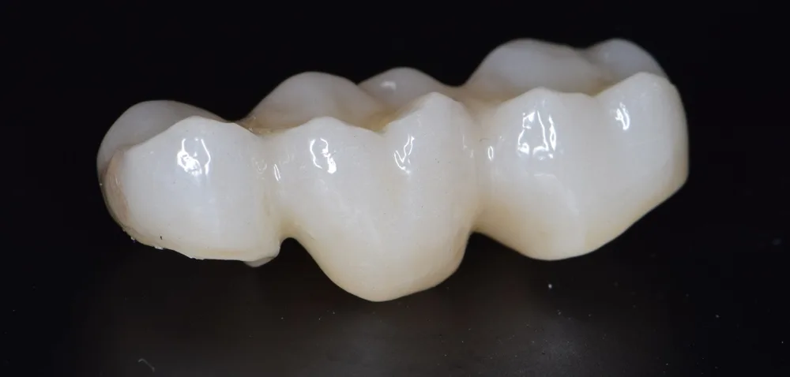
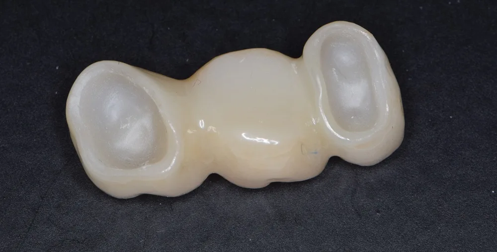
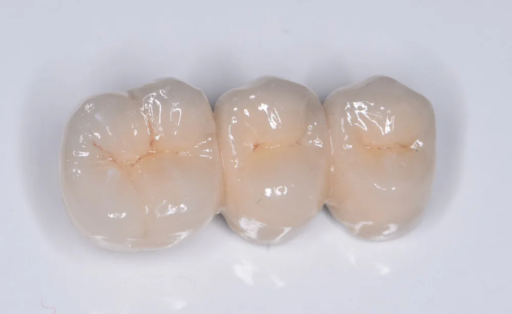
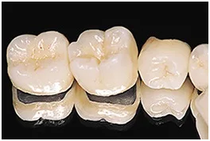
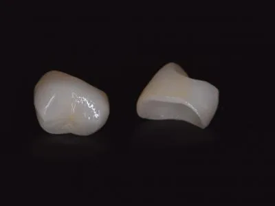
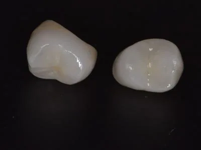
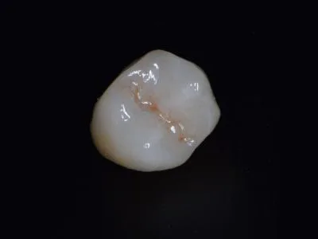
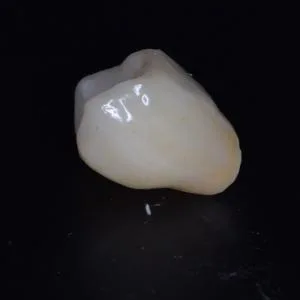
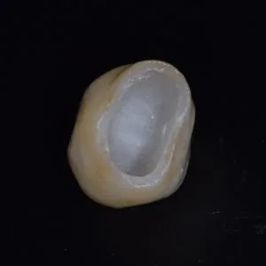
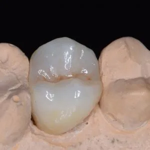
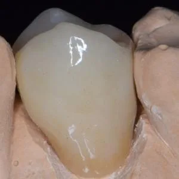
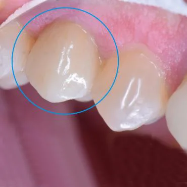
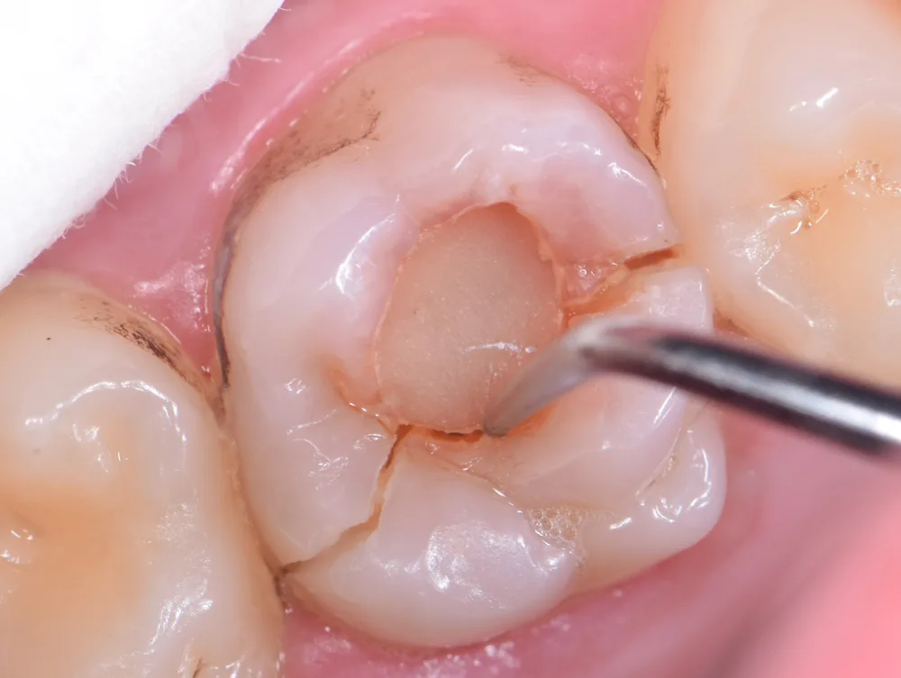
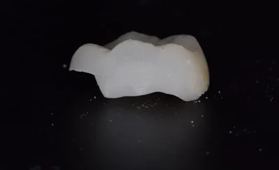
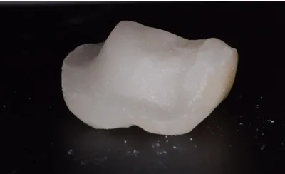
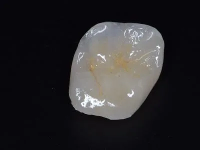
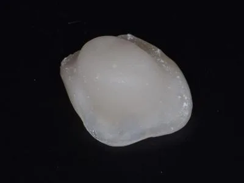
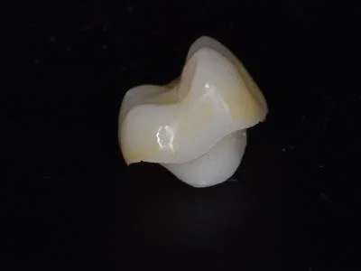
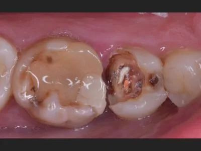
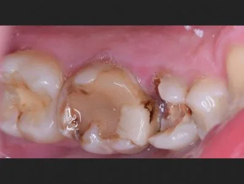
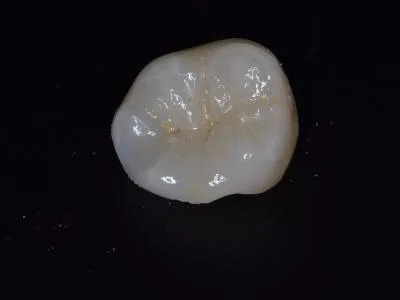
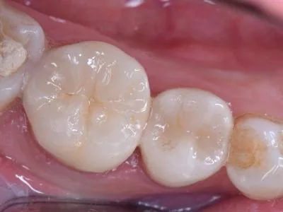
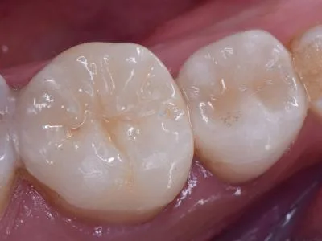
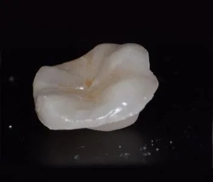
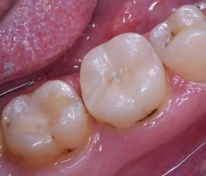
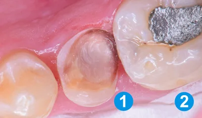
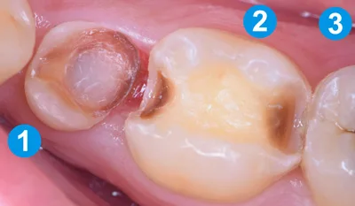
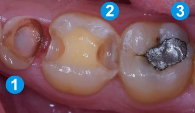
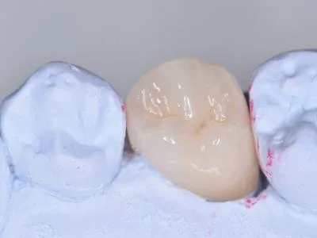
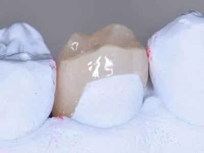
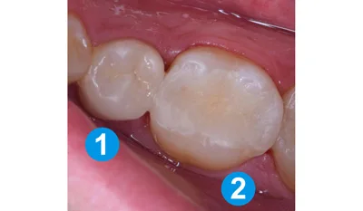
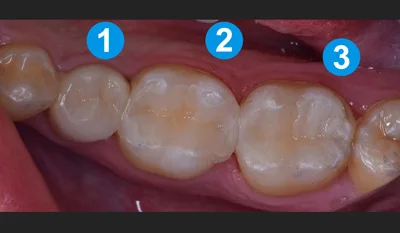
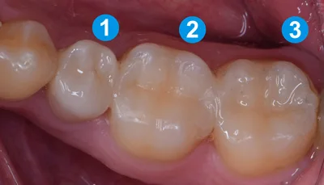
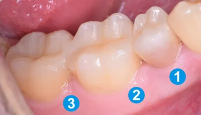
Complete original text and photographs (Bulgarian)
Мостове
Един от начините за възстановяване на едни или няколко липсващи зъби, е изработването на мостова конструкция. Това налага изпиляването на съседните зъби, които ограничават дефекта. Така те ще служат за мостоносители ( зъбите, върху които се поставя мостът ). След това следват няколко клинични и лабораторни етапа, като изработване на временен мост – от пластмаса, снемане на отпечатък, метална проба, определяне на цвят и др. , докато се достигне до фиксирането на конструкцията в устата.
Трябва да се знае, че когато се загъби дори и един зъб и ако не бъде запълнено празното място, настъпват промени и в двете зъбни редици. Изработването на мост е от изключителна важност, поради няколко причини.
- След загубата на зъб, съседните зъби, които ограничават дефекта, се наклоняват към празното място, като в същото време се оголва част от кореновата им повърхност. Зъбът, който се намира на противоположната зъбна дъга ( ако липсва зъб от долната редица, този от горната и обратното ) , прораства също към дефекта. Разбира се, този процес отнема известно време, но е неизбежен. Процеса се нарича „ ефекта на Годон – Попов „. По този начин, образувалия се патологичен процес все повече напредва във времето. Това от своя страна прави по- нататъшното протезиране по- трудно. Мястото, където би могло да се постави мост или имплант постепенно се затваря, зъбът или зъбите от другата редица прорастват и за да се освободи място за имплантиране или протезиране, е необходимо предприемане на по- сложен лечебен план.
- Загуба на функция в обеззъбения участък, при което настъпва неравномерно разпределяне на дъвкателните сили, прекалени натоварвания върху съседните зъби, като и изменения в темпоромандубуларната става. Също така може да бъде нарушена и говорната функция, защото определени букви се изговарят по различен начин, има „ съскане „ при говор, както и излизане на слюнка от устата, което е неприятно.
- Естетически съображения – разбира се, загубата на зъб винаги води до нарушения на естетиката – празното място при говор, смях, комуникация, обикновено не остава незабелязано от околните.
Изработването на временен мост е изключително необходимо, тъй като предпазва изпилените зъби от термични дразнения ( ако са живи ) , както и от инфектиране от бактериите, които се намират в устната кухина. Изпилените зъбни тъкани остават открити за всички микроорганизми от слюнката. Временната конструкция възстановява говора, дъвкателната функция, както и естетиката. Това е от изключително значение за пациента. Изключително важни са оздравителния процес на меките тъкани. Също така дават идея за това как ще изглежда бъдещата конструкция и има ли нужда да се промени формата, захапката и т.н. След като успешно се премине през този етап, вече можем да преминем към изработването на постоянните конструкции.
Циркониев мост
Циркониев мост
Циркониев мост
Има случаи, в които се налага зъбите да бъдат обвити в корони. Различни са индикациите за това : провеждане на кореново лечение ( зъбът е умъртвяван ), поради голям кариес, който е унищожил много голяма част от зъба, фрактура на зъба и др.
Короната може да бъде металокеранична, изцяло керамична, както и циркониева.
При металокерамичната корона има метално кепе, което много точно и плътно приляга към предварително подготвения ( изпиления ) за това зъб . Кепето се покрива с керамика.
Другият вид корони са без металните – изцяло керамичните и циркониевите корони.
Тук естетиката е в пъти по- голяма. Отсъства метала. Той спира преминаването на светлината през зъбната структура и по този начин естетиката значително намалява. Когато метала липсва, естетиката е максимално близка до тази на естествения зъб. Натуралния изглед на коронката е вследствие способността да отразява всички ефекти на светлината, като прозрачност, флуоресценция, опалесценция.
Изработват се както на умъртвени, така и на живи зъби. Здравината не е по – различна от тази на металокерамиката. Поставят се и в областта на дъвчащите зъби, на които попада най- голямото дъвкателно налягане. Изклчтително леки и биологични, отлично се понасят от меките тъкани в устата ( венеца ). Комфорта за пациента е от изключително значение – той не чувства разлика между естествените зъби и коронката.
Те са здрави, естетични и биологично поносими !
Целта на всички корони е да възстановяват контактите със съседните зъби и с тези от противоположната зъбна редица, естетиката, функцията и биогогията !
На снимката е показана фракрурирана ( счупена ) корона на умъртвен зъб. Важно е да се знае, че зъбите след като се умъртвят, губят значителна част от своята еластичност и хидратация. Рискът от счупване, за съжаление, е доста висок. В много голям брой от случаите се налага да последва изваждане на зъба, защото обикновено счупванията са много дълбоки и зъба не може да се изгради и протезира. Затова обвиването с корона на умъртвените зъби като цяло е изкллючително необходимо, за да се избегне този риск и възможните усложнения.
Керамични корони на зъби с лекувани канали
Този вид корони се изработват за възстановяване на ендодонтски лекувани зъби ( зъби с предшестващо кореново лечение ).
След извършването на екзактно лечение на каналите, в някои случаи може да се пристъпи към изработването на такъв вид корони. Зъбът се изпилява, взима се отпечатък, след това в лабораторията се изработва от керамика липсващата част от зъба. Тук особеното е, че вътрешната част на короната изпълва вътрешността на зъба, като по този начин връзката е много силна.
Избягва се нуждата от изграждане с щифт и композити, както и околовръсното изпиляване на целия зъб за обвивна корона.
Възстановява се изцяло естетиката, функцията и биологичността на зъба.
Клиничен случай
Клиничен случай 2
Клиничен случай 3
Зъб 1 е с лекуван канал и предстои да бъде завършен с ендокорона. Следващите два зъба (2 и 3) са с вторични кариеси под амалгамени пломби.
Еднокоронка на модел
След лечение се фиксира ендокорона на зъб 1, а на зъби 2 и 3 се изработват естетични пломби.


 ПредиСлед
ПредиСлед
 ПредиСлед
ПредиСлед ПредиСлед
ПредиСлед ПредиСлед
ПредиСлед


 ПредиСлед
ПредиСлед ПредиСлед
ПредиСлед ПредиСлед
ПредиСлед